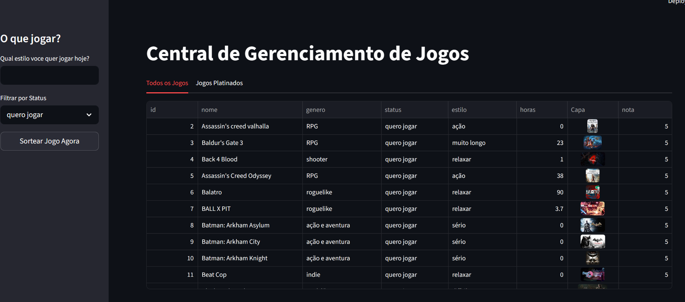
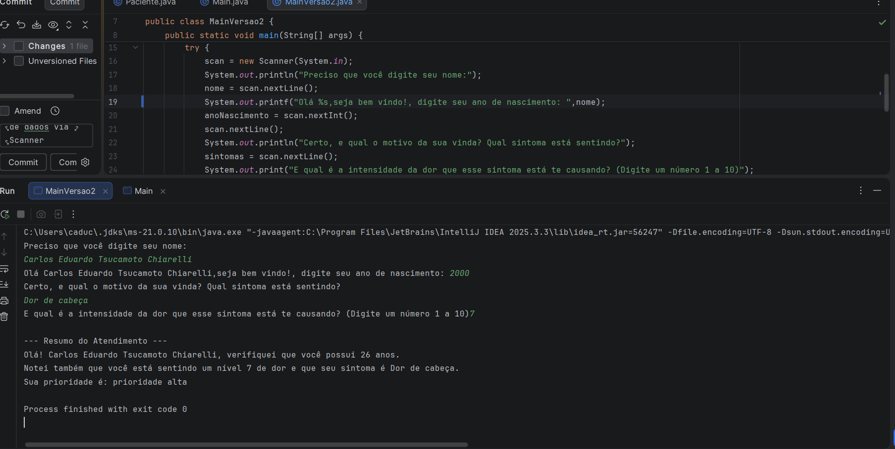

Backlog de jogos

Link para o backlog no GitHubDashboard pessoal focado no gerenciamento de rotina e bibliotecas de jogos. Desenvolvido inicialmente como uma aplicação Python, usando SQLite para armazenamento e Streamlit para a interface, o projeto foi integralmente refatorado para o ecossistema web nativo (HTML/CSS/JS). Essa migração teve como objetivo expandir as funcionalidades, entregar uma interface responsiva e construir uma arquitetura preparada para diversas outras funções como o plano de estudos.
O que foi usado: Python, Streamlit e SQL
Pedra, papel ou tesoura
 Link para a página do jogo no GitHub
Ver projeto funcionando
Link para a página do jogo no GitHub
Ver projeto funcionando
Minha versão do clássico Pedra, Papel e Tesoura, construída do zero com JavaScript. O grande foco desse projeto foi colocar a lógica de programação em prática: criei o algoritmo que gera as jogadas aleatórias do 'computador' e fiz toda a manipulação do DOM para capturar os cliques e atualizar a tela em tempo real. A estrutura visual foi feita com HTML e CSS, e o site está no ar rodando direto pelo Vercel.
O que foi usado: HTML, CSS e JavaScript
Jogo de adivinhação de números
 Link para a página do jogo no GitHub
Ver projeto funcionando
Link para a página do jogo no GitHub
Ver projeto funcionando
Este projeto nasceu durante meus estudos de Front-end na plataforma Alura. É um jogo interativo de adivinhação numérica onde coloquei a lógica de programação à prova. Utilizei JavaScript para construir o motor do jogo, lidando com a geração de números aleatórios, validação das tentativas e atualização do DOM em tempo real. Uma excelente prática de fundamentos, com interface estruturada em HTML e CSS e hospedagem no Vercel.
O que foi usado: HTML, CSS, JavaScript
Sistema de Triagem de Pacientes

Link para o projeto no GitHubProjeto executado via terminal (Java)
Sistema de triagem de pacientes desenvolvido em Java que simula um atendimento hospitalar. O programa coleta informações como nome, ano de nascimento, sintomas e nível de dor, e define automaticamente a prioridade de atendimento com base em regras de negócio.
O que foi usado: Java